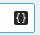

Kate
软件简介
Kate 是一个具有众多功能的跨平台文本编辑器。Kate 还附带了多种插件，包括一个嵌入式终端，可以让你直接从 Kate 中启动控制台命令，强大的搜索和替换插件，以及一个预览插件，可以渲染 MD、HTML 甚至 SVG 文件。支持通过交换文件在系统崩溃时恢复数据，带参数提示的自动补全，同时支持 LSP (Language Server Protocol) 以获得更为强大的补全。
下载与安装
可打开 Kate 官网，然后进入 获取页面。随后，根据你使用的系统和喜欢的安装方式进行安装。
用法与功能
交换文件防止数据丢失
与 Vim 类似，Kate 会将未保存的更改写入一个交换文件（一般是原文件名前面加点后面加 .kate-swp），如果遭遇断电或程序崩溃等意外，下次启动时不会丢失未保存的更改。
代码高亮
Kate 支持三百余种语言的语法高亮。一般来说，Kate 可以自动地选择对应的语言进行语法高亮，不过偶尔也有错误的时候，这时候可以点击最右下角的按钮，选择正确的语言。
自己编写语法高亮文件
尽管 Kate 支持超过三百种语言的语法高亮，但是仍不免有语言未被覆盖到，此时可以自己动手编写语法高亮文件。 Kate 自身自带的文件位于 Syntax Highlighting Powered By KSyntaxHighlighting Framework，语法可参照 Working with Syntax Highlighting，编写好的文件根据 Syntax definition files 放置。CoelacanthusHex/dotfiles@80a913c/pam_env.xml 有笔者编写的一个配置文件可供参考。
切换语言
点击上方工具栏里的 设置/Setting，然后点击 配置语言/Configure Language，随后选择语言即可，注意可以选择备选语言。
编码与行尾符
Kate 可以自动识别当前文件使用的是什么编码，如果识别错误，可以点击右下角倒数第二个按钮，选择正确的编码。
同时，Kate 也可以自动识别当前文件使用的行尾符，如果识别错误，可以点击 工具→行尾/Tool→End of line 选择正确的行尾符。
查找与替换
依次单击 编辑→查找（快捷键Ctrl+F）即可打开「查找」页面。依次单击 编辑→替换（快捷键Ctrl+R）即可打开「查找与替换」页面。同时，点击左下角 搜索与替换 也可打开「查找与替换」页面。
具体操作和其他编辑器并无太大差别，但是支持一些额外的特性，例如：
- 是否区分大小写
- 支持正则表达式（包括捕获组）
- 从当前文件到多文件再到当前工程不等的范围
- 对查找的结果进行选择替换
Language Server Protocol
Kate 自 19.12 起支持 LSP Client，最初仅支持 C/C++、D、Fortran、Go、Latex/BibTeX、OCaml、Python、Rust，现如今支持如下表中的语言：
| 语言 | LSP Server |
|---|---|
| Bash | bash-language-server |
| LaTeX | texlab |
| BibTeX | texlab |
| C | clangd |
| C++ | clangd |
| D | serve-d |
| Fortran | fortls |
| Go | gopls |
| Haskell | haskell-language-server-wrapper |
| JavaScript | typescript-language-server |
| OCaml | ocamllsp |
| Perl | Perl-LanguageServer |
| Python | pyls |
| Rust | rls |
| TypeScript | typescript-language-server |
| R | RLanguageServer |
| zig | zls |
要启用 LSP 相关特性，需要前往菜单栏中 设置→配置 Kate 然后选择 插件 中 LSP 客户端 以启用相关特性。当打开对应语言的文件时，Kate 会自动拉起对应的 LSP Server。
增加配置
此外，用户还可以手动编写配置，具体格式为：
1 2 3 4 5 6 7 8 9 10 11 12 13 14 15 16 17 18 19 20 21 22 23 24 25 26 27 28 29 30 31 32 33 34 35 | |
其中 server 里的每一项代表一种语言，在这个语言里，command 代表启动 LSP Server 所使用的命令，command 是一个数组，是所需要执行的命令以空格分词的结果；url 是 LSP 的网址；rootIndicationFileNames 是用于确定项目根目录的文件；highlightingModeRegex 则匹配某种语法高亮的名字，以确定使用哪个 LSP；如果存在 use 项，则代表使用 use 项对应的语言的配置。
该配置项位于 设置→配置 Kate→LSP 客户端→用户服务器设置，其中 LSP 客户端 部分要在 插件 中启用 LSP 客户端 插件后才可见。
内置终端
注意
内置终端依赖了 KDE 的 Konsole1，而 Konsole 为 * nix 独有包。也就是说，Windows 下该特性不可用。
按F4可打开或关闭内置终端，也可点击左下角 终端 按钮打开，内置终端的当前目录会自动与当前文件保持一致，并随着你选择的文件而改变。其余与一般终端并无太大不同。
外部工具
点击 工具→外部工具 可执行。
点击 工具→外部工具→配置 可以配置外部工具。
添加外部工具
从预置配置中添加
进入配置页面后，点击左下角 添加→从默认工具添加，然后点击对应工具即可。
手写配置添加
进入配置页面后，点击左下角 添加→添加工具，然后按提示填写即可。可以参照 此文档（英文） 来编写自己的外部工具配置。注意可点击如下标志查看可使用的变量。

常用的外部工具
编译并执行单个 C++ 文件
在 * nix 系统下，打开任意 C++ 源文件，在外部工具里找到 编译执行 cpp，点击即可。
对于 Windows 用户
在默认情况下，由于该工具的可执行文件为 sh，使得该工具在 Windows 下不可用。然而，用户可以对该工具进行修改，使其可用于 Windows 系统。
要进行修改，请先确保你的系统内有一个可用的 C++ 编译器。然后从默认工具添加 编译运行 cpp，将其中 可执行文件 从 sh 改为 powershell，参数改为 -ExecutionPolicy Bypass -Command "g++ %{Document:FilePath} -o %{Document:FileBaseName}.exe;./%{Document:FileBaseName}.exe" 23即可。
Git Blame
打开任意文件，在外部工具里找到 git blame，点击之后，会打开一个窗口，展示 git blame 的结果。
格式化
格式化功能要求对应包或应用程序可用，例如，C/C++ 的格式化要求 clang-format 可用。对于其他语言，用户可以前往外部工具配置中查看其默认可执行文件作为参考。
打开任意源文件，在外部工具里找到 用 xxx 格式化，点击即可。另外，对于 C/C++ 语言的源文件，clang-format 可格式化选中的文本。
Git Blame
要启用该特性，需要前往菜单栏中 设置→配置 Kate 然后选择 插件 中 Git Blame。
启用该特性后，Kate 会在每一行后面以较浅字体显示在 Git 中最后于什么时间被谁修改，将鼠标移动到文字上会出现一个悬浮窗显示 commit 的具体信息。
相关外部链接
参考资料与脚注
-
Arch Linux 中对该包的描述 中，其可选依赖了
konsole，描述为open a terminal in Kate（在 Kate 中打开一个终端）。 ↩ -
若
g++不在PATH环境变量中，则将其改为编译器的绝对路径 ↩ -
或者，如果使用 Clang，则将
g++改为clang++。 ↩